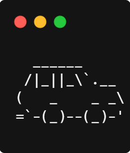
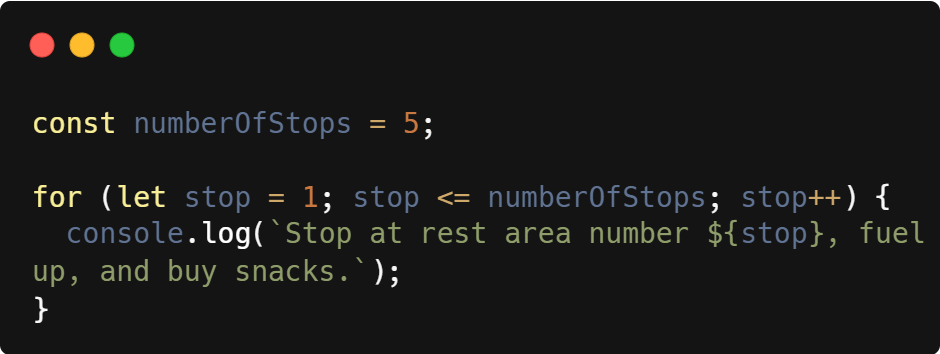
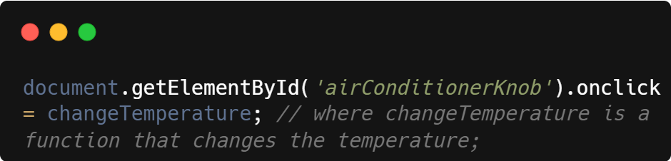

An analogy to describe Javascript and its relationship to HTML and CSS:
We can compare Javascript, HTML and CSS to the engine, body, and paint job of a car. HTML provides the structure and content of a web page, like how the body of a car gives it its size and shape. CSS provides the styling and visual presentation of a web page, similar to the paint job that gives a car its colour and design. Finally, Javascript adds interactivity and dynamic behaviour to a web page, like the engine that powers a car and allows us to drive away from all our problems.

Explain control flow and loops using an example process from everyday life.
My rather dull description of Javascript, HTML and CSS lulls you to sleep. As we drive out of Auckland, you jolt awake, confused. I explain that I have kidnapped you so that I can continue to teach you web development concepts using automobile analogies.
We can compare control flow and loops to a road trip. A road trip is a step-by-step process that ends with us reaching our destination. Along the way, we make a series of rest stops. Control flow in a road trip refers to the order in which stops are executed — certain stops must be made in a specific order to reach our final destination. Loops are the repetitive actions that we do in relation to these stops. For example, we repeat the steps of stopping at rest areas, fueling up, and buying snacks until we reach our destination. The code below illustrates a rest stop loop that repeats in order until the target number of stops is reached.

Describe what the DOM is and an example of how you might interact with it.
The DOM (Document Object Model) is a tree-like representation of a web page's structure and content, with elements and nodes that correspond to the different parts of a web page (e.g. headings, paragraphs, images, etc.).
We can compare the DOM to the dashboard of a car — the DOM lets us change a webpage, and a car dashboard lets us interact with and change the state of the car. For example if we want to adjust the air conditioning, we can interact with the corresponding knob on the dashboard. If we want to interact with elements on a webpage, we use Javascript to access and modify the elements in the DOM. In the code below, the changeTemperature function is executed whenever the airConditionerKnob element is clicked.

Explain the difference between accessing data from arrays and objects.
Arrays are ordered collections of values, where each value has a unique index number. This index number is used to access specific values in an array.
Objects are unordered collections, where values are assigned keys, which are a unique string identifier. These keys are used to access specific values in an object.
At the auto repair shop, an array is equivalent to a meticulously numbered set of tools, laid out in order on a bench. An object is like if each tool was put into a labelled box, and then all of the boxes thrown somewhat haphazardly into a larger box.
Explain what functions are and why they are helpful.
Functions are blocks of code that perform a specific task and can be executed multiple times in a program. They allow us to make reusable units of code, which we can use to make our code more organised and efficient.